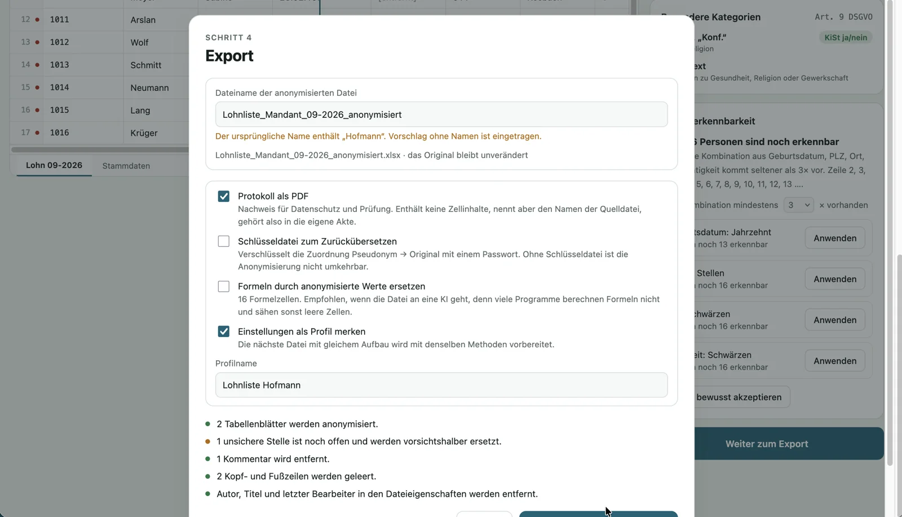

Excel-Anonymisierer · für Lohnlisten, Mandanten- und Fachverfahrenslisten
Die Lohnliste darf zur KI. Die Namen nicht.
Tabellen sind das, was man einer KI am liebsten gibt, und das, was sie am wenigsten sehen darf. Der KI-Anonymisierer Excel macht aus Ihrer Lohnliste eine Datei, die das Haus verlassen darf. Auf Ihrem Rechner, ohne Cloud.
- .xlsx und .xlsm
- Lokal in Docker
- Protokoll als PDF
- Rückweg mit Schlüsseldatei

Excel-Datei rein, sichere Datei raus.
Datei hineinziehen
Die Excel-Datei bleibt auf Ihrem Rechner. Das Original wird nie verändert.
Erkennen
Jede Spalte bekommt ein Etikett: Name, Adresse, IBAN, Geburtsdatum, Steuer-ID, Religion, Freitext.
Entscheiden
Pro Spalte eine Methode. Nur echte Zweifelsfälle werden abgefragt, links Original, rechts Ergebnis.
Speichern
Neue Datei, Protokoll als PDF und auf Wunsch eine verschlüsselte Schlüsseldatei zum Zurückübersetzen.
Mehr als Namen löschen
Prüfziffer statt Überschrift
Eine gültige IBAN ist eine IBAN, egal wie die Spalte heisst. Steuer-ID ebenso, dazu Sozialversicherungsnummer, Geburtsdatum, E-Mail und Telefon.
Die Spalte «Bemerkung»
Freitext wird Stelle für Stelle geprüft, mit Regeln, einem lokalen Sprachmodell und den Namen aus der Tabelle selbst. Gesundheitsangaben werden entfernt.
Methode pro Spalte
Pseudonym, Vergröbern, Schwärzen, Ersatzdaten oder Behalten. Vorlagen für KI-Auswertung, Weitergabe an Dritte und Testdaten.
Wiedererkennbarkeit
Eine Ampel zeigt, wer trotz Anonymisierung erkennbar bleibt, etwa die einzige Filialleiterin, Jahrgang 1968, und schlägt vor, was hilft.
Was ausserhalb der Zellen steckt
Ausgeblendete Blätter, Kommentare, Kopf- und Fusszeilen, Pivot-Zwischenspeicher, Autorangaben und der Dateiname.
Protokoll, Rückweg, Profile
PDF-Nachweis ohne Zellinhalte, Rückübersetzung mit Schlüsseldatei und Passwort, gemerkte Einstellungen für die Liste im nächsten Monat.
Die echte Anwendung

Gut zu wissen
Unterstützt werden .xlsx und .xlsm, CSV und alte .xls-Dateien bitte vorher in Excel als .xlsx speichern. Diagramme und Bilder werden nicht übernommen, die Oberfläche weist darauf hin. Pseudonymisierte Daten bleiben personenbezogen, solange eine Schlüsseldatei existiert. Die Erkennung ist gründlich, ersetzt aber nicht den prüfenden Blick auf die Spaltenetiketten.
Häufige Fragen
Verlassen meine Daten den Rechner?
Nein. Die Anwendung läuft als Docker-Container auf Ihrem Rechner, das Sprachmodell ist enthalten, sie arbeitet auch ohne Netzwerk. Dateien liegen nur im Arbeitsspeicher, der Port ist an 127.0.0.1 gebunden.
Was brauche ich für die Installation?
Docker, unter Windows und macOS Docker Desktop mit 4 GB Arbeitsspeicher. Ein Befehl richtet alles ein, danach läuft die Oberfläche unter http://localhost:9999.
Wie teste ich?
7 Tage kostenlos mit vollem Funktionsumfang. Den Testschlüssel erhalten Sie auf Anfrage per E-Mail. Einstellungen und Profile aus dem Test bleiben beim Kauf erhalten.
Was kostet die Lizenz?
EUR 99.– einmalig je Arbeitsplatz. Die Lizenz ist unbefristet und wird auf Ihre Organisation ausgestellt. Der Schlüssel wird lokal geprüft, ohne Onlineaktivierung.
Für wen ist das gedacht?
Steuerberatung und Lohnbüros, Personalabteilungen, Behörden und Kommunen, Praxen und Pflegedienste, Vereine und Verbände.